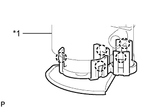
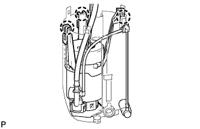
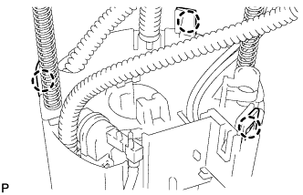
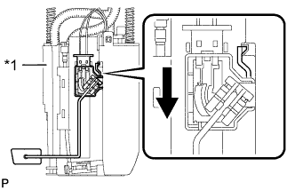

ТОПЛИВНЫЙ НАСОС (для моделей с двойным топливным баком) > ПОВТОРНАЯ СБОРКА |
| 1. УСТАНОВИТЕ ГЛАВНЫЙ ТОПЛИВНЫЙ КЛАПАН В СБОРЕ |
Слегка смажьте 2 новых кольцевых уплотнения бензином и установите их на главный топливный клапан.
| *1 | Новое кольцевое уплотнение |
Установите главный топливный клапан в корпус топливного фильтра.
| 2. УСТАНОВИТЕ ТОПЛИВНЫЙ НАСОС |
Подсоедините разъем жгута проводов топливного насоса к топливному насосу.
 |
Нанесите тонкий слой бензина на новое кольцевое уплотнение. Затем установите распорную втулку топливного насоса и кольцевое уплотнение на топливный насос.
| *1 | Новое кольцевое уплотнение |
| *2 | Распорная втулка топливного насоса |
|  |
Вставьте 5 захватов в отверстия и установите топливный насос на корпус топливного фильтра.
| *1 | Корпус топливного фильтра |
| 3. УСТАНОВИТЕ РАСШИРИТЕЛЬНЫЙ ТОПЛИВНЫЙ БАЧОК № 1 |
|  |
Закрепите 3 захвата в отверстиях, чтобы установить расширительный топливный бачок № 1.
|  |
Вставьте 3 захвата в отверстия.
Подсоедините эжектор B к расширительному топливному бачку № 1.
Вставьте захват на конце трубки в отверстие для захвата.
| *1 | Эжектор A |
| *2 | Эжектор B |
Подсоедините эжектор A к расширительному топливному бачку № 1.
Подсоедините разъем топливного насоса
| 4. УСТАНОВИТЕ ДАТЧИК УРОВНЯ ТОПЛИВА В СБОРЕ |
|  |
Установите датчик уровня топлива на расширительный топливный бачок. Затем сдвиньте датчик уровня топлива вниз, чтобы установить его.
| *1 | Расширительный топливный бачок |
 | Сдвиньте |
Подсоедините разъем датчика уровня топлива.